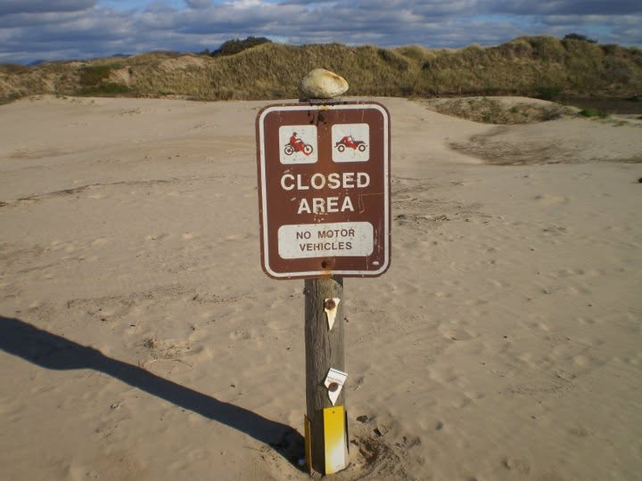
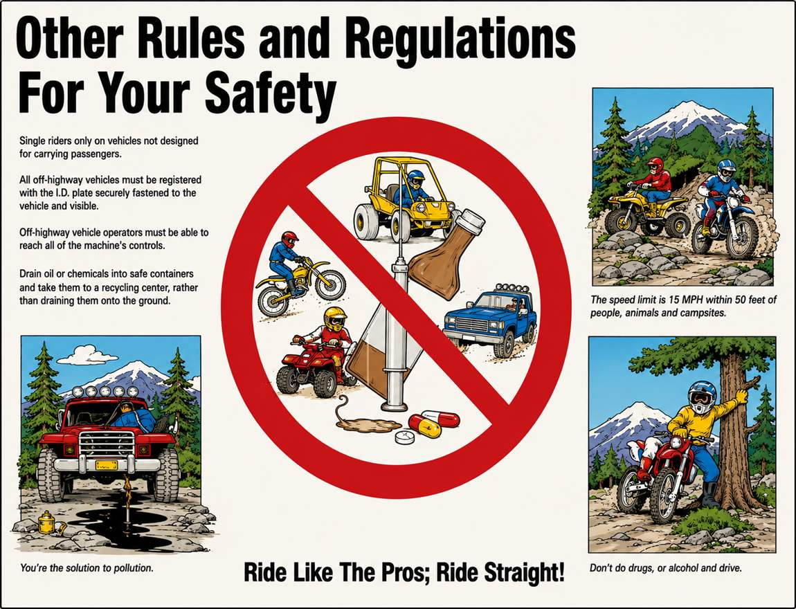
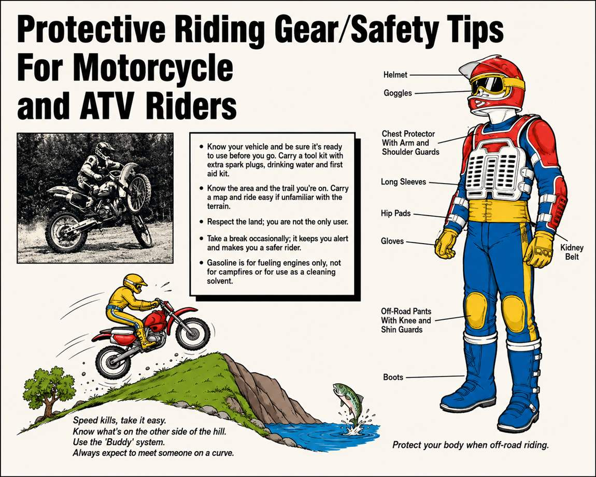
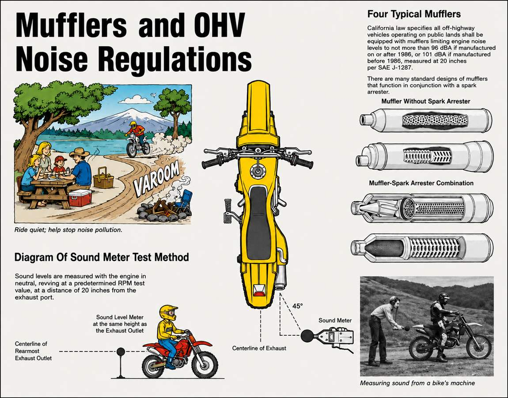

Rules & Regulations
The rules that keep the dunes open, keep riders safe, and keep tickets off your windshield. Vehicle code citations included for the folks who like receipts.
Every Vehicle Needs One of Three Things
All vehicles operated on public lands must be registered with the DMV. OHV registration fees fund new riding areas, operations, enforcement, and resource protection.
Street-Legal Plate
For 4-wheel drives and dual-purpose motorcycles used both on-highway and off. A street-licensed vehicle is good to go.
Green or Red Sticker
Off-highway-only vehicles need a DMV-issued sticker. Green stickers (2002-and-older OHVs plus newer emissions-compliant vehicles) are valid year-round statewide. Red stickers go to 2003-and-newer OHVs that don't meet California OHV emissions standards (a "3" or "C" in the 8th VIN position). Oceano Dunes allows red sticker riding all year round.
Nonresident Permit
Visiting from out of state without current home-state registration? You must buy a California Nonresident OHV Use Permit before riding public lands.
On the Sand
- 15 MPH on the beach and within 50 feet of any camp or group of people. California's Basic Speed Law applies everywhere in the dunes: never faster than conditions allow.
- DUI laws are identical off-highway. And it is illegal to possess an open container of alcohol in or on an OHV. Secured, inaccessible transport (locked containers, strapped ice chests) is allowed.
- Helmets are required for everyone operating or riding an ATV (CVC 38505).
- Whip flag required on every vehicle in the dunes, including street-legal 4WDs: an 8-foot whip with a solid orange or red flag.
- No passengers on three- or four-wheeled single-seat ATVs.
- Stay out of vegetated areas. Motor vehicles must keep to open sand.
- Towing anything other than another motor vehicle is prohibited.
- Campfires: allowed on the sand south of Grand Avenue, maximum 3 feet across by 2 feet tall, clean untreated wood only. Never leave a fire unattended; douse with water, never bury.
- Trash: deposit all trash in the designated receptacles at Post 2, or pack it out.
- Suspended or revoked license? You may not operate a motor vehicle off-road, period.
- Night riding: unlicensed operators may not ride during nighttime hours or outside the designated OHV area.
Rules for Riders Under 18
- Under 18: must hold an ATV safety certificate, be taking a certified training course, or ride under direct supervision of an adult who holds a certificate (CVC 38503). Training is funded for ages 6 to 17; sign up through the ATV Safety Institute at (800) 887-2887.
- 13 and under: must be supervised at all times while in the park, on or off the machine.
- Under 14: all of the above, plus direct supervision by a parent, guardian, or an adult they authorize (CVC 38504).
- Fines escalate: $125 (or court-ordered training) for a first conviction, up to $250 for a second, and up to $500 after that. Courts can also order the child and the supervising adult back to training together.
- Every unlicensed operator must be supervised by a licensed adult and be physically able to work all the controls.


What Your Machine Must Have
| Requirement | The Rule |
|---|---|
| Whip flag | An 8-foot whip with a solid orange or red flag, required on ALL vehicles operating in the dunes, including street-legal 4WDs. |
| Noise limit | 96 dBA max for vehicles built 1986 or later (101 dBA for older), measured at 20 inches under SAE J-1287. Competition vehicles: 96 dBA if built 1998 or later. |
| Spark arrester | Required in effective working order on any OHV (CVC 38366), mounted so exhaust heat and flame can't ignite flammable material. |
| Lights at night | Between sunset and sunrise: at least one headlight good for 200 feet and one red taillight visible for 200 feet (CVC 38335, 38345). |
| ROVs (side-by-sides) | Helmets, whip and flag, and seatbelts are all required while operating. |
| Roll protection | Except for 2-, 3-, and 4-wheeled cycles, vehicles need roll bars or a roof structure strong enough to support the vehicle, plus a secure seat and seat belt for the operator and every passenger. |
| No red/blue warning lights | Prohibited except for emergencies (CVC 38346). Sirens are prohibited on anything but authorized emergency vehicles (CVC 38375). |

Share the Sand With the Plover and the Tern
The endangered California least tern and the threatened western snowy plover nest right on these sands. Following these rules protects the birds and protects your riding access.
- Do not enter posted nest exclosures.
- Do not camp or park within 100 feet of a posted exclosure.
- Keep dogs leashed at all times.
- Pack out trash properly so it doesn't attract predators to the nests.
- No kite flying. Kites read as predators and frighten nesting birds.
Build Your Trip Plan in 60 Seconds
Tide-timed arrival windows for your exact dates, a personalized gear checklist, and the local tricks that keep you off the tow strap.
Plan Your Trip